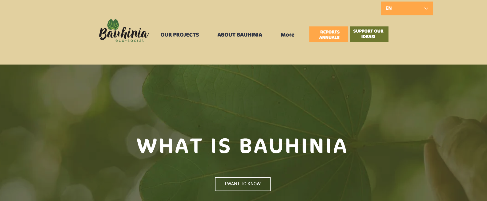
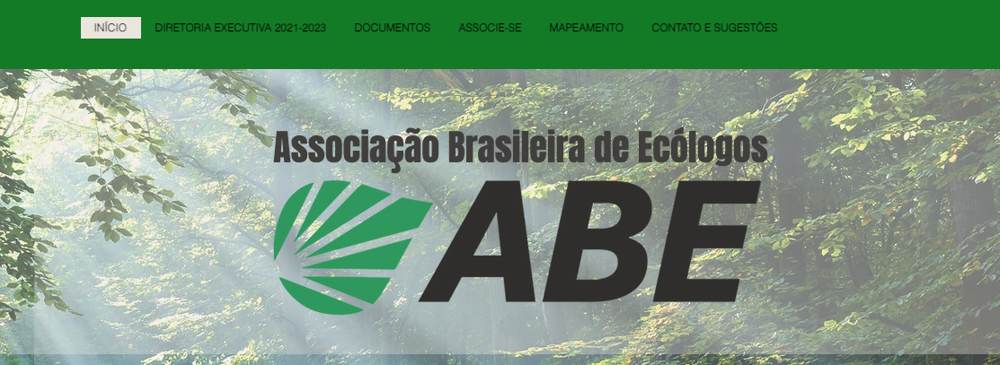

The SUI is the national governing body for caving and cave exploration in Ireland.
I have complied a Geodatabase for the Union in the areas of Fermanagh and Cavan.
Organised all documents, minutes and agendas of meetings, and revising conservation documents.
Created and organised the Covid-19 Lockdown Livestream to entertain our members and caving enthusiastic during 2020 on our YouTube channel.
The currently working areas are creating projects with the farmers to grow their productivity and develop their leadership skills, aiming to involve more people from the urban landscape to the rural communities and getting to know where their food is coming from.

Elected to the supervisory board for a two-year term from 2018-2020 and re-elected but as vice treasurer under the term 2021 - 2023. I delivered accountancy documents relating to the regulation of the ecological profession in Brazil. We have increased the social media accessibility of the association due to substantial media efforts.
